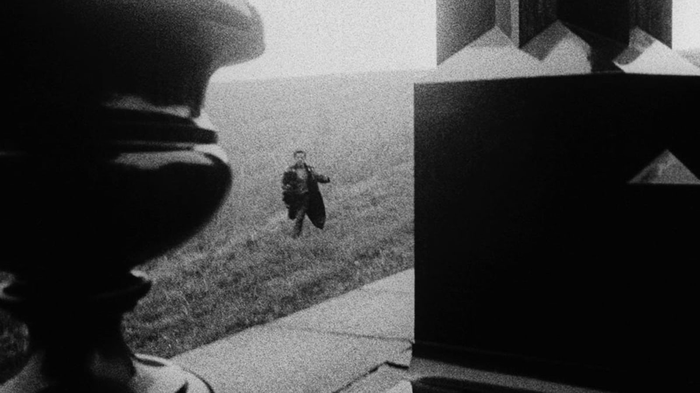
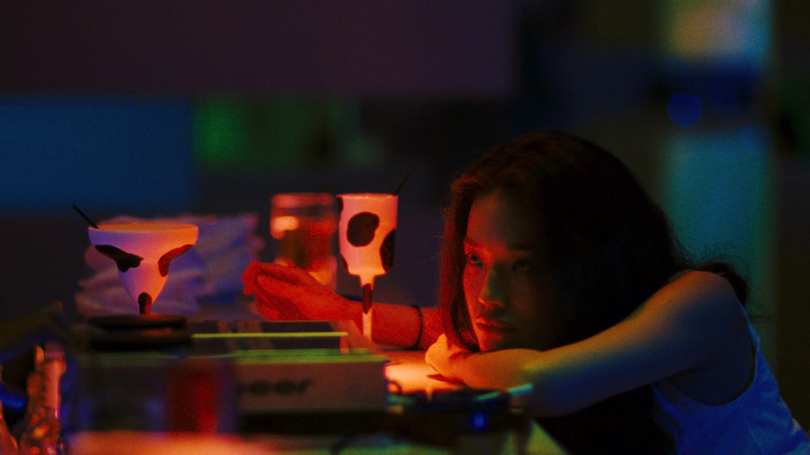
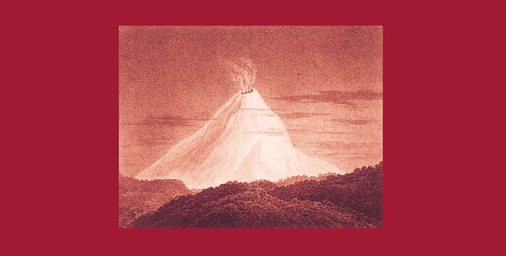
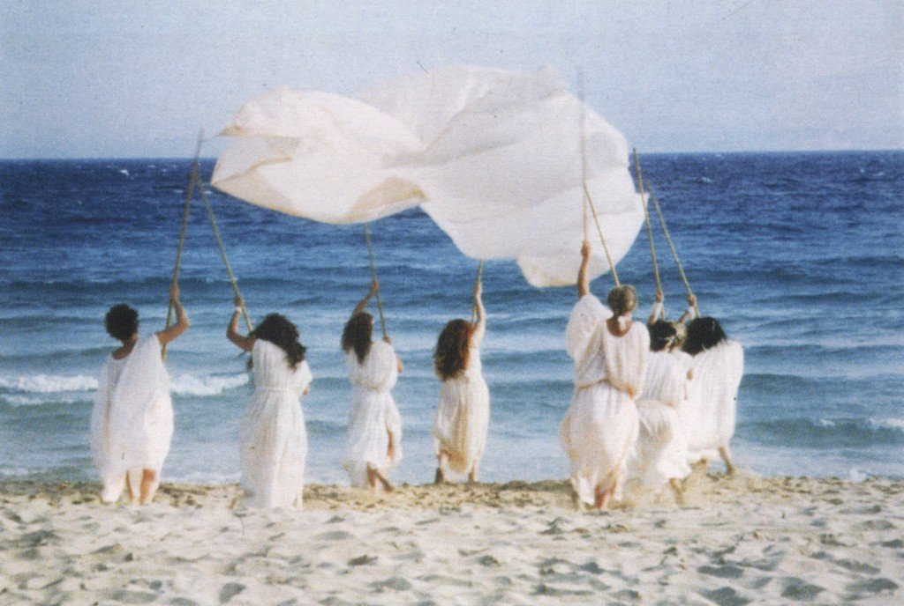
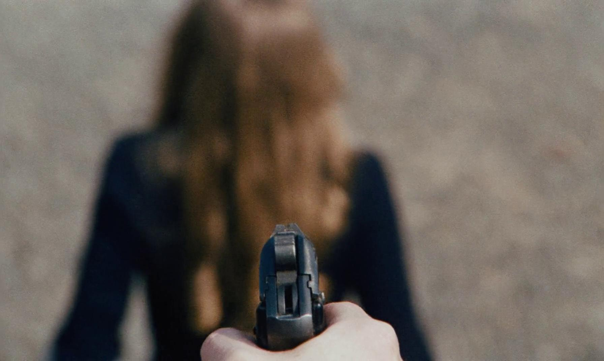
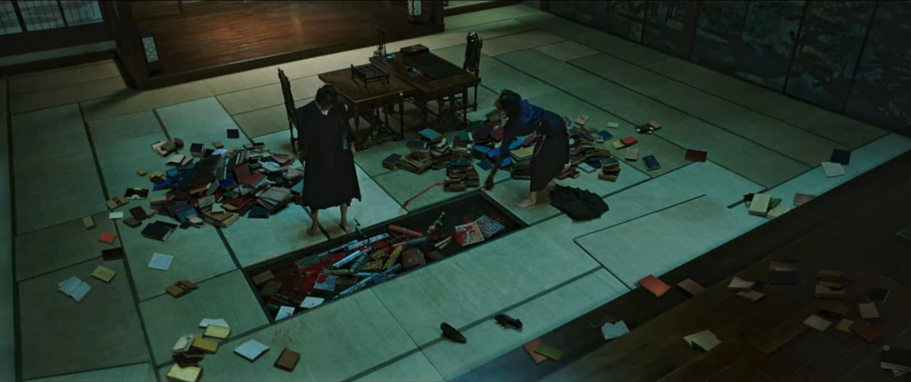
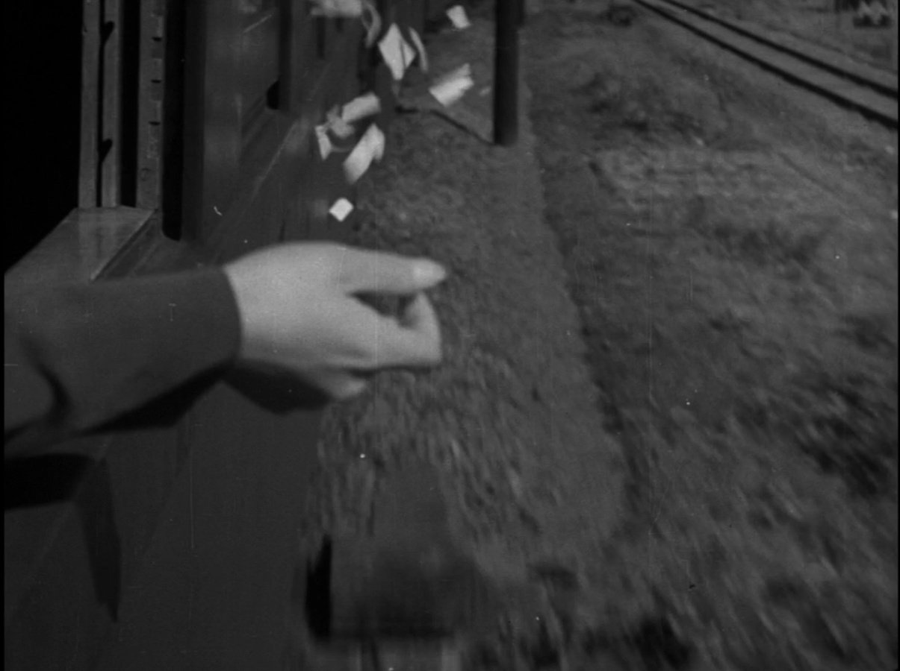
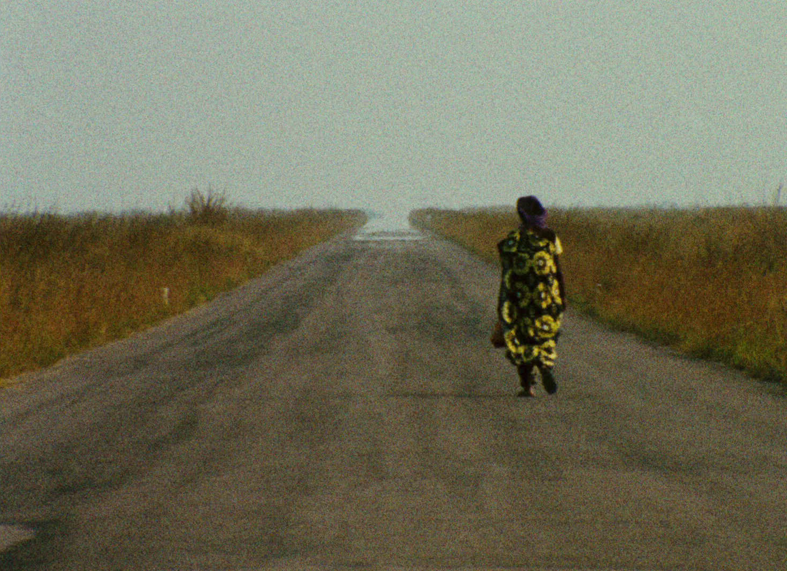

From the notebook of... (1971), Robert Beavers.

Something like a blog
LAST UPDATED: OCTOBER, 2025
August 2025
Fabian: going to the dogs (2021), Dominik Graf.
Madonna in a furcoat (1943), Sabahattin Ali.
«For as long as I could remember, I had — perhaps without knowing, or perhaps not daring to breathe the thought — been searching for someone. That was why I have been avoiding all others.»
From the notebook of... (1971), Robert Beavers.
Sentimental value (2025), Joachim Trier.

That day on the beach (1983), Edward Yang.

Diamonds of the night (1962), Jan Němec.

Human acts (2014), Han Kang.
«The day I stood shoulder to shoulder with hundreds of thousands of my fellow civilians, staring down the barrels of the soldiers' guns, the day the bodies of those first two slaughtered were placed in a handcart and pushed at the head of the column, I was startled to discover an absence inside myself: the absence of fear. I remember feeling that it was all right to die; I felt the blood of a hundred thousand hearts surging together into one enormous artery, fresh and clean... the sublime enormity of a single heart, pulsing blood through that vessel and into my own. I dared to feel a part of it.»
Greek lessons (2011), Han Kang.
«Sometimes I'll recall dream images from that time in my life with unusual clarity.
Snowflakes that melt as soon as they touch late-autumn's still-warm earth.
The vertiginous unfurling of heat-haze in early springtime.
Their faint, muffled presence.
Fragments of a god I never believed in.
For that is neither born not extinguished.
The Hwaeom I'd clung to with all I had at fifteen,
which rises behind all beings like dazzling shadows over water,
and blooms forth as thousands of brilliant flowers that encompass the world.
I lie here staring up into the vague whiteness of the emptiness above me, thinking about that world.
I peer at it with eyes wide open.»
Do the right thing (1989), Spike Lee.
July 2025
Molloy (1951), Samuel Beckett.
«I took advantage of being at the seaside to lay in a store of sucking-stones. They were pebbles but I call them stones. Yes, on this occasion I laid in a considerable store. I distributed them equally between my four pockets, and sucked them turn and turn about. This raised a problem which I first solved in the following way. I had say sixteen stones, four in each of my four pockets these being the two pockets of my trousers and the two pockets of my greatcoat. Taking a stone from the right pocket of my greatcoat, and putting it in my mouth, I replaced it in the right pocket of my greatcoat by a stone from the right pocket of my trousers, which I replaced by a stone from the left pocket of my trousers, which I replaced by a stone from the left pocket of my greatcoat, which I replaced by the stone which was in my mouth, as soon as I had finished sucking it. Thus there were still four stones in each of my four pockets, but not quite the same stones. And when the desire to suck took hold of me again, I drew again on the right pocket of my greatcoat, certain of not taking the same stone as the last time. And while I sucked it I rearranged the other stones in the way I have just described. And so on. But this solution did not satisfy me fully. For it did not escape me that, by an extraordinary hazard, the four stones circulating thus might always be the same four. In which case, far from sucking the sixteen stones turn and turn about, I was really only sucking four, always the same, turn and turn about. But I shuffled them well in my pockets, before I began to suck, and again, while I sucked, before transferring them, in the hope of obtaining a more general circulation of the stones from pocket to pocket. But this was only a makeshift that could not long content a man like me. So I began to look for something else.»
Millenium mambo (2001), Hou Hsiao Hsien.

The boys from Fengkuei (1983), Hou Hsiao Hsien.
The green, green grass of home (1982), Hou Hsiao Hsien.
Moving (1993), Shinji Sōmai.
The silence (1998), Mohsen Makhmalbaf.
All we imagine as light (2024), Payal Kapadia.
Normal people (2020), Lenny Abrahamson and Hettie Macdonald.
Water lilies (2007), Céline Sciamma.
June 2025
Autobiography of Red (1998), Anne Carson.

Geryon was a monster everything about him was red
Put his snout out of the covers in the morning it was red
How stiff the red landscape where his cattle scraped against
Their hobbles in the red wind
Burrowed himself down in the red dawn of jelly of Geryon’s
Dream
Maurice (1987), James Ivory.
Y Seiobo descendió a la tierra (2008), László Krasznahorkai. Translated to Spanish by Adan Kovacsics.
«[…] porque ella, la Venus de Milo, no encajaba ahí, según Chaivagne, ni encajaba en ningún sitio en el mundo, porque todo cuanto ella, la Venus del Milo, significa, sea lo que fuere, proviene de un mundo celestial que ya no existe, que el tiempo ha pulverizado, que se ha esfumado, que ha desaparecido para siempre de las alturas como un universo aniquilado, porque lo elevado a desaparecido del mundo humano, y aquí ha quedado ella, de ese orden superior ha quedado esta Venus, completamente abandonada, y este abandono, explicaba él para sus adentros al anochecer, cuando se instalaba en el sillón para poner los pies doloridos en remojo y escuchar las noticias en France I, este abandono lo entendía como que había perdido el sentido, que estaba allí porque ese tal Yorgos la había excavado en su día, ese tal D’Urville la había mandado traer y ese tal Ravaisson había juntado los fragmentos y la había expuesto, pero carecía de todo sentido, el mundo había cambiado en el curso de los últimos mil años, había desaparecido la comunidad de los hombres por la cual esa Venus del Milo se alzaba en algún lugar, allí no lo hacia en vano y daba a entender que existía un reino superior, más ese reino se disolvió, desapareció sin dejar huellas y no se puede entender qué significa algún fragmento o trozo suyo que ha permanecido aquí y que ha sido excavado porque hoy en día, se dijo Chaivagne mientras movía los dedos de los pies en agua fría, no existe el arriba y el abajo, sólo un mundo, aquí en el medio, donde vivimos, donde circulan los trenes de las líneas 1, 4 y 7 del ferrocarril metropolitano, donde está el Museo del Louvre y dentro del museo la Venus que mira hacia un punto inescrutable, enigmático y lejano, está ahí, la colocan ora en un sitio, ora en otro, y ella sigue volviendo la cabeza con orgullo hacia esa misteriosa dirección e irradia, irradia belleza a la nada, y nadie la entiende y nadie percibe hasta qué punto resulta dolorosa esa visión, una diosa abandonada por el mundo, una divinidad poderosa, inconmensurablemente poderosa que, sin embargo, no posee nada.»
House (1977), Nobuhiko Ôbayashi.
Les rendez-vous d'Anna (1978), Chantal Akerman.
May 2025
La frontera (2008), Can Xue. Translated to Spanish by Blas Piñero.
«La casa del pueblo de pescadores tenía tres habitaciones, y sus muros eran de ladrillo. Estaba siempre llena de gente, y en ella reinaba un ambiente caluroso y acogedor. A Qi Ming le encantaba sentarse en los peldaños de la puerta y observar a lo lejos las gaviotas que revoloteaban sobre el mar. Su corazón y sus pensamientos volaban con ellas, lejos, siempre lejos del pueblo y sus gentes humildes. ¿Sabía su padre lo que pasaba por la cabeza de su hijo cuando contemplaba esas gaviotas?, se preguntaba Qi Ming. A pesar de la distancia, la casa de pescadores estaba presente en el pueblo aislado de la frontera a través del sueño; pero él, Qi Ming, no tenia la intención de regresar a su lugar de origen, su pueblo natal, y hasta le había cogido gusto a la separación, porque ésa era una fuente inesperada de belleza para él: el hecho de estar lejos del pueblo embellecía su tierra natal y la casa donde había nacido; embellecía, en pocas palabras, sus orígenes, cuando la realidad mostraba todo lo contrario.»
Nadie te oye: perfume de violetas (2001), Marisa Sistach.
The marriage of Maria Braun (1979), Rainer Werner Fassbinder.

Ain't nothin' without you (1986), Pia Frankenberg.

18 of May, one perfect day in Bern

Judas y otros ensayos sobre lo divino y lo humano (1853-1863), Thomas de Quincey.
Judas Iskariot by Eilif Peterssen (1878).
Nostos (1989), Franco Piavoli.

April 2025
Voices through time (1996), Franco Piavoli.


Eternity and a day (1998), Theo Angelopoulos.
Chess of the wind (1976), Mohammad Reza Aslani.
Never sleep again (1992), Pia Frankenberg.
Linda Linda Linda (2005), Yamashita Nobuhiro.
The future tense (2022), Joe Lawlor and Christine Molloy.
Touki Bouki (1973), Djibril Diop Mambéty.

Cure (1997), Kiyoshi Kurosawa.
March 2025
Tabu (2012), Manuel Gomes.
Metaphysics (Circa 350 BC), Aristotle. Translated to Spanish by Tomás Calvo Martínez.

Scenes with girls (2020), Miriam Battye.
A tale of springtime (1990), Éric Rohmer.
Ice merchants (2022), Joāo Gonzalez.
Muse (2024), Paweł Pawlikowski.
Three paths to the lake (1976), Michael Haneke.
Fremont (2023), Babak Jalali.
February 2025
Woodcutters (1984), Thomas Bernhard. Translated to English by David McLintock.
«They had said that they had no idea when Joana's funeral at Kilb would take place. I had been informed that day by a childhood friend of Joana's, just before I left home, that Joana had hanged herself. This friend, who runs a general store in Kilb, did not want to tell me over the telephone that Joana had hanged herself; she simply told me that she had died, but I told her outright that Joana had not died, but killed herself. She, as her friend, must know how she had done it, I said, but she simply would not tell me. Country people are more inhibited than townspeople about saying openly that somebody has killed himself, and they find it hardest of all to say how. I guessed at once that Joana had hanged herself; in fact I said to the woman from the general store, Joana hanged herself, didn't she? She was taken aback and simply said Yes. People like Joana hang themselves, I said. They don't throw themselves in the river or jump out of fourth-floor windows: they get a piece of rope, deftly tie a noose in it, attach it firmly to a beam then let themselves drop into the noose. Ballerinas and actresses hang themselves, I told the woman from the general store.»
The loser (1983), Thomas Bernhard. Translated to English by Jack Dawson.
«I myself had attempted to play the Goldberg Variations at an early age and long before Glenn Gould. I was never afraid of them, unlike Wertheimer who always put off the Goldberg Variations for a rainy day so to speak, I thought, I never experienced this cowardice, never racked my brains over such imprudence, indeed never even worried about it, so that quite simply I began to practice them, and indeed years before the Horowitz course dared to play them, naturally by heart and not worse than many of our famous concert artists, but not really as well as I would have liked. Wertheimer was always an anxious type, for this serious reason fully unsuited for a career, especially at the piano, for which one needs above all a radically fearless nature towards everything and anything, I thought.»
Concrete (1982), Thomas Bernhard. Translated to English by David McLintock.
«I imagined I needed no one, and this is what I still imagined to this day. I needed no one, and so I had no one. But naturally we do need someone, otherwise we inevitably become what I have become: tiresome, unbearable sick — impossible, in the profoundest sense of the word. I always believe that I could get on with my intellectual work if only I were completely alone, with no one else around. This proved to be mistaken, but it is equally mistake to say that we actually need someone. We need someone for our work, and we also need no one. Sometimes we need someone, sometimes no one, and sometimes we need someone and no one.»
Por primera vez (1967), Octavio Cortázar.
Hit the road (2021), Panah Panahi.
Yesterday girl (1966), Alexander Kluge.
January 2025
The novelist's film (2022), Hong Sang-soo.
From what is before (2014), Lav Díaz.
Turumba (1981), Kidlat Tahimik.
Perfumed nightmare (1977), Kidlat Tahimik.
The Terrence Davies Trilogy
Children (1976), Terrence Davies.
Madonna and child (1980), Terrence Davies.
Death and transfiguration (1983), Terrence Davies.
Vertigo (1990), W. G. Sebald. Translated by Michael Hulse for New Directions.
«Taking care not to disturb him, I sat down. The book he was reading had a pink jacket, bearing the portrait of a woman, in dark colours. Below the portrait, in lieu of a title, where the numbers 1912+I. A waiter came to the table. He was wearing a long green apron. I ordered a double Fernet on the rocks. Salvatore had meanwhile lay his book aside and restored his glasses to their proper place. He explained apologetically that in the early evening when he had at least escaped the pressures of the daily round he will always turn to a book, even if he had left his reading glasses in the office, has he had today. Once I am at leisure, said Salvatore, I take refuge in prose as one might in a boat. All day long I am surrounded by the clamour of the editorial floor, but in the evening I cross over to an island, and every time, the moment I read the first sentences, it is as if I were rowing far out on the water. It is thanks to my evening reading alone that I am still more or less sane.»
The rings of Saturn (1995), W. G. Sebald. Translated by Michael Hulse for New Directions.
«For Browne, things of this kind, unspoiled by the passage of time, are symbols of the indestructibility of the human soul assured by scripture, which the physician, firm though he may be in his Christian faith, perhaps secretly doubts. And since the heaviest stone that melancholy can throw at man is to tell him that he is at the end of his nature, Browne scrutinizes that which escapped annihilation for any sign of the mysterious capacity for transmigration he has often observed in caterpillars and moths. That purple piece of silk he refers to, then, in the urn of Patroclus — what does it mean?»
The emigrants (1992), W. G. Sebald. Translated by Michael Hulse for New Directions.
«At least once a week, Paul taught us French. He began with the simple observation that he had once lived in France, that people there spoke French, that he knew how to do it, and that we could easily do it too, if we wished. One May morning we sat outside in the school yard, and on that fresh bright day we easily grasped what un beau jour meant, and that a chestnut tree in blossom might just as well be called un chataignier en fleurs.»
A wolf lying in wait (2015), Abbas Kiarostami. Translated by Translated by Karim Emami and Michael Beard; and the mysterious podcast episode on Kiarostami, which brings me calm.
December 30, 2024
Goodbye, Dragon Inn (2003), Tsai Ming-liang.
December 29, 2024
I am not a witch (2017), Rungano Nyoni.
December 28, 2024
The trial of Joan of Arc (1962), Robert Bresson.
December 26, 2024
Aguirre, the wrath of God (1972), Werner Herzog.
December 24, 2024
Crossing (2024), Levan Akin.
December 23, 2024
Chinese Roulette (1976), Rainer Werner Fassbinder.

December 15, 2024
The bohemian life (1992), Aki Kaurismäki.
Family romance, LLC (2019), Werner Herzog.
December 14, 2024
Decision to leave (2022), Park Chan-wook. Rewatch.
December 06, 2024
Blow-ball (1965), Márta Mészáros.
December 04, 2024
Melancolía de la resistencia (1989), László Krasznahorkai.
«Cada mañana, antes de irse, la señora Harrer le suministraba por el resquicio de la puerta las últimas horrorosas y aparentemente inconcebibles noticias, sea sobre las oscilaciones de la torre del agua, sea sobre el mecanismo de relojería que de repente se había puesto en marcha en la plaza Mayor (ese día había hablado de una “reunión de hijos del inferno” y de un árbol caído en el pasaje Hétvezér), pero él no veía nada asombroso en ello y no dudaba ni un instante de que todo esto fuera rigurosamente cierto—a pesar de la estupidez innata de la mensajera—, puesto que las informaciones apoyaban con exactitud cuanto él ya intuía necesariamente: el fin de la idea de que las consecuencias pueden calcularse, el fin de la ilusión de que los acontecimientos son previsibles, el fin “definitivo de la racionalidad”.»
December 03, 2024
Ungentle (2022), Huw Lemmey and Onyeka Igwe.
December 01, 2024
The lunchbox (2013), Ritesh Batra.
November 30, 2024
Diary of an african nun (1977), Julie Dash.
So long my son (2019), Wang Xiaoshuai.
November 23, 2024
Berlin Alexanderplatz (1980), Rainer Werner Fassbinder.
November 14, 2024
In our time (1982), Edward Yang, Yi Chang, Ko I-Chen and Tao Te-Chen.
November 11, 2024
Tokyo-Ga (1985), Wim Wenders.
October 28, 2024
The handmaiden (2016), Park Chan-Wook.

October 26, 2024
Raise the red lantern (1991), Zhang Yimou.
October 25, 2024
To live (1994), Zhang Yimou.

October 22, 2024
Austerlitz (2001), W. G. Sebald.
«Todos nosotros, incluso los que creemos haber prestado atención a lo más mínimo, recurrimos sólo a decorados que se han utilizado con harta frecuencia en la escena. Tratamos de presentar la realidad, pero, cuanto más nos esforzamos, tanto más se nos impone lo que siempre se ha visto en el teatro histórico: el tambor caído, el soldado de infantería que apuñala a otro, el ojo desorbitado de un caballo, el invulnerable emperador, rodeado de sus generales, en medio del fragor congelado de la batalla. Nuestra dedicación a la historia, según la tesis de Hilary, era una dedicacion a imágenes prefabricadas, grabadas ya en el interior de nuestras mentes, a las que no hacemos más que mirar mientras la verdad se encuentra en otra parte, en algún lugar apartado todavía no descubierto por nadie.»
October 15, 2024
Al norte la montaña, al sur el lago, al oeste el camino, al este el río (2003), László Krasznahorkai.
«Nadie se apeó ni nadie se subió en la estación que seguía a la de Shichijo en la línea de Keihan, el tren se detuvo, las puertas se abrieron mecánicamente y, al cabo de unos segundos, se cerraron, con un gran suspiro, el jefe de estación alzó la paleta, miró hacia los dos extremos del andén desierto, pulsó el botón en la comuna de mando y, por último, hizo una lenta, profunda y ceremoniosa reverencia al convoy vacío que abandonaba sin hacer ruido la estación y seguía su camino rumbo al sur, hacia Uji.»
October 01, 2024
On the beach at night alone (2017), Hong Sang-soo.
September 26, 2024
Right now, wrong then (2015), Hong Sang-soo.
September 22, 2024
To the left of the father (2001), Luiz Fernando Carvalho.
Portrait d'une jeune fille de la fin des années 60 à Bruxelles (1994), Chantal Ackerman.
September 21, 2024
A los treinta años (1961), Ingeborg Bachmann. Translated to Spanish by Cecilia Dreymüller for Tresmolins.
«En aquella época, en su cabeza habían bailado los signos de puntuación del mundo, pero ahora se lo ocurrían las primeras frases en las que aparece el mundo. Entonces había creído poder pensar todas las cosas hasta el final, y apenas se había dado cuenta de que sólo estaba dando los primeros pasos hacia una realidad que no se dejaba pensar hasta el final y que todavía le reservaba muchas sorpresas.»
September 16, 2024
Girlfriends (1978), Claudia Weil.
September 15, 2024
Days of heaven (1978), Terrence Malick.
Tótem (2023), Lila Avilés.
September 09, 2024
Chronicle of a summer (1961), Jean Rouch and Edgar Morin.
September 08, 2024
Past lives (2023), Celine Song.
September 06, 2024
Pascal Vonlanthen exhibited at the Collection de l'Art Brut, Lausanne.
September 03, 2024
Parmenides (368 B.C.E.), Plato. Translated to Spanish by María Isabel Santa Cruz.
«Pero si alguien, a propósito de las cosas de las que estaba hablando yo ahora, primero distinguiera y separara las Formas en sí y por sí, tales como la semejanza, desemejanza, multiplicidad, lo uno, reposo, movimiento y todas las cosas de este tipo, y mostrase a continuación que ellas admiten en sí mismas mezclarse y discernirse, ¡tal cosa sí que me admiraría —dijo— y me colmaría de asombro, Zenon!»
August 24, 2024
Burning (2018), Lee Chang-dong.

August 23, 2024
HHH: A portrait of Hou Hsiao-Hsien (1997), Olivier Assayas.
August 20, 2024
The bitter tears of Petra von Kant (1972), Rainer Weiner Fassbinder.

August 19, 2024
Fear and Trembling (1843), Søren Kierkegaard. Translated to Spanish by Darío González and Óscar Parcero. Trotta Editorial.
August 15, 2024
Sophist (360 B.C.E.), Plato. Translated to Spanish by Néstor Luis Cordero.
«
TEET. — Me parece, Extranjero, que es totalmente verdadero lo que dijimos al comienzo sobre el sofista: que su género sería difícil de cazar.
Él se muestra, en efecto, pleno de obstáculos, y cuando se defiende enfrentándonos con uno de ellos, debemos luchar primero contra éste, para poder luego alcanzarlo a él mismo.
Apenas superado el obstáculo que afirmaba que el no-ser existe, nos obstaculiza con otro, y es preciso demostrar ahora que existe lo falso en el discurso y en el juicio.
Y después de este vendrá quizá otro, y luego otro más; y, según parece, nunca se vislumbrará el final.
EXTR. — Coraje, Teeteto. Es necesario siempre ir hacia adelante, por poco que se avance.
Quien pierde el coraje ahora, ¿qué hará en aquellos casos en los que no consigue nada, o cuando se vea forzado a retroceder?
Difícilmente alguien así llegaría a ‘tomar la ciudad’, como dice el proverbio.
Pero como ya se ha superado eso que tú dices, noble amigo, lo cual fue para nosotros la fortaleza mayor que hemos conquistado, el resto será fácil y de poca importancia.»
August 11, 2024
Picnic at the hanging rock (1975), Peter Weir.
August 10, 2024
The last metro (1980), François Truffaut.

August 09, 2024
Death by hanging (1968), Nagisa Ōshima.

August 07, 2024
REM (1989), Mircea Cărtărescu. Translated to Spanish by Marian Ochoa de Eribe for Impedimenta.

«Todo el interior estaba ocupado por varios montones de folios, miles de páginas apiladas unas encima de otras. Cuando, tras hundir los dedos en ellas y volcarlas sobre la alfombra, Egor las desperdigó por toda la estancia, pude ver que estaban atiborradas por una escritura uniforme, extrañamente inexpresiva. Pero solo cuando intenté leer algunas líneas de la obra del alargado, comprendí el inmenso horror que esta contenía: a lo largo de miles y miles de páginas, con la la paciencia y tenacidad de una hormiga, Egor había escrito una sola palabra que se repetía decenas de veces en cada página. Era la palabra no.»
July 29, 2024
The realist versus the pragmatist view of epistemology (2024), Céline Henne for Aeon magazine.

"The issue is not just what to think about things, but how to think about them. Such enquiries are concerned with the creation, revision or expansion of our frameworks. In their most radical instances, they lead to what Kuhn called ‘paradigm shifts’, as when physics moved from the Newtonian paradigm of absolute space and time to Einstein’s relativistic paradigm. While these enquiries also rely on concepts, methods and assumptions – as all enquiries do – they involve the continuous revision of existing frameworks or the creation of new ones as they progress. Consequently, these enquiries are open-ended and creative in a more fundamental sense. The product itself, not just the way of getting there, involves creation."
July 26, 2024
Death in Venice (1971), Luchino Visconti.

July 24, 2024
The night of counting the years (1969), Shadi Abdel Salam.

July 22, 2024
Lust, Caution (2007), Ang Lee.

July 20, 2024
Repast (1951), Mikio Naruse.

July 19, 2024
The virgin spring (1960), Ingmar Bergman.
July 18, 2024
La repetición (1843), Søren Kierkegaard. Translated to Spanish by Darío Gonzáles y Óscar Parcero para Editorial Trotta.
«¿Quién habría imaginado ese desenlace? Y, sin embargo, ningún otro desenlace es pensable, aunque tampoco este lo sea. Cuando todo se ha detenido, cuando el pensamiento se estanca, cuando el lenguaje enmudece, cuando la explicación retorna desesperada a su casa --- entonces tiene que haber una tormenta. ¿Quién puede entender esto? Y, sin embargo, ¿a quién podría ocurrírsele otra cosa?»
July 17, 2024
My life as a dog (1985), Lasse Hallström.
July 16, 2024
Ugetsu (1953), Kenji Mizoguchi. Rewatch.

July 15, 2024
Theaetetus (circa 350 B.C.E.), Plato. Translated to Spanish by Álvaro Vallejo Campos.
«
TEOD. — Teeteto lo soportará, Sócrates, porque no es díscolo en lo absoluto. Pero, por los dioses, dinos dónde está el error.
SÓC. — Decididamente, Teodoro, eres un amante de los argumentos y eres generoso, al tratarme como si yo fuera un saco de argumentos y pudiera extraer fácilmente uno de ellos, para decir dónde está el error en esta doctrina. Pero no te das cuenta de lo que pasa, porque los argumentos nunca proceden de mí, sino del que conversa conmigo. Yo no sé nada, a excepción de algo bien insignificante que consiste en recibir un argumento de otro que sea sabio y aceptarlo en su justa medida.
»
July 12, 2024
Streets of Shame (1956), Kenji Mizoguchi.

July 11, 2024
When cinema reflects the times: Hou Hsiao-Hsien and Edward Yang (1993), Hirokazu Koreeda.
July 07, 2024
After the curfew (1954), Usmar Ismail.
July 06, 2024
The end of summer (1961), Yasujirō Ozu.

July 03, 2024
Scattered Clouds (1967), Mikio Naruse.
June 29, 2024
The cranes are flying (1957), Mikhail Kalatozov.

June 27, 2024
The Passion of Joan of Arc (1928), Carl Theodor Dreyer.
June 23, 2024
Sambizanga (1972), Sarah Maldoror.

June 16, 2024
The Blue Kyte (1993), Tian Zhuangzhuang.
June 15, 2024
Devi (1960), Satyajit Ray.

June 13, 2024
In the mood for love (2000), Wong Kar Wai. Rewatch.

June 11, 2024
Timeo (circa 385 B.C.E.), Plato. Translated to Spanish by F. J. Olivieri.
«¿Es verdadera la afirmación de la unicidad del universo o sería más correcto decir que hay muchos e incluso infinitos mundos? Uno, si en realidad ha de estar fabricado según su modelo. Pues lo que incluye todos los seres vivos inteligibles existentes nunca podría formar un par con otro porque seria necesario otro ser vivo adicional que los comprendiera a estos dos, del que serían partes, y entonces sería más correcto afirmar que este mundo no se asemeja ya a aquéllos sino a a que que los abarca. Por ello, para que en la singularidad fuera semejante al ser vivo perfecto, su creador no hizo ni dos ni infinitos mundos, sino que éste, generado como un universo único, existe y existirá solo.»
Nudo Mixteco (2021), Ángeles Cruz.
June 10, 2024
Le Havre (2011), Aki Kaurismaki.


June 09, 2024
Primera memoria (1959), Ana María Matute.

June 02, 2024
The wild pear tree (2018), Nuri Bilge Ceylan.
June 01, 2024
Suzhou river (2000), Lou Ye.

May 31, 2024
Sonntag (2024), Pascal Thieret for NOWNESS.
Winter sleep (2014), Nuri Bilge Ceylan.

May 30, 2024
Interview to Hannah Arendt (1964), by Günter Gaus.
May 28, 2024
Kapurush (1965), Satyajit Ray.
May 20, 2024
Meno (circa 385 B.C.E.), Plato. Translated to Spanish by F. J. Olivieri.

«Me puedes decir, Sócrates: ¿es enseñable la virtud?, ¿o no es enseñable, sino que sólo se alcanza con la práctica?, ¿o ni se alcanza con la práctica ni puede aprenderse, sino que se da en los hombres naturalmente o de algún otro modo?»
May 18, 2024
La familia Karnowsky (1943), Israel Yohoshua Singer.Translated to Spanish by Rhoda Henelde and Jacob Abecasís.

«Los negocios iban bien, incluso mejor que de costumbre. La gente se aglomeraba en las calles en un ambiente festivo y de actitud temeraria, y olvidaba el hábito de hacer cuentas de ahorrar. Los camareros servían a los clientes de cabello oscuro, como de costumbre, tarta de manzana, el café, y les llevaban los periódicos de todo el mundo, y todavía se dirigían hacia ellos como Herr doctor, tanto si el título les correspondía como si no. Nadie pensaba que todo eso cambiaría. Nadie quería creerlo. Además, en caso de que llegara a suceder algo malo, les sucedería a los demás; es así como suelen pensar los seres humanos en tiempos de plaga.»
Anatomy of a fall (2023), Justine Triet. Rewatch.
May 17, 2024
Eat drink man woman (1994), Ang Lee. Rewatch.

May 12, 2024
La Haine (1995), Mathieu Kassovitz. Rewatch.

May 10, 2024
Damnation (1987), Béla Tarr.
May 9, 2024
Territorio de luz (1978), Yuko Tsushima. Traducido por Tana Oshima para Impedimenta.
«También esa mañana me había separado del suelo en el que dormía maldiciendo a mi hija por no querer encaramarse al mundo del sueño igual que yo. Lo recogí todo un poco, y para cuando terminé de preparar el desayuno, que hizo las veces de comida, ya había dado la una. Si me ponía a lavar la ropa sucia acumulada, a hacer la compra y limpiar el piso, se me echaría encima la hora de cenar. Todavía tenía cosas que planchar y coser. La sola idea me resultó agotadora y me volví a tumbar en el tatami. ¿Será aquel otro domingo en el que no ocurría nada? Tenía la sensación de estar esperando algo con angustia, pero también estaba segura de que esa expectativa se terminaría desvaneciendo. No por ser domingo resultaba más alegre sentarse a comer. Como siempre, mi hija y yo estábamos solas.»
May 5, 2024
Festen (1998), Thomas Vinterberg.
Umberto D. (1952), Vittorio De Sica.
May 4, 2024
Dust in the wind (1986), Hou Hsiao-Hsien.

May 2, 2024
Tres senderos hacia el lago (1972), Ingeborg Bachmann. Translated to Spanish by Isabel García Adánez for Siruela.
«Por fin llegó el tren y Elisabeth subió después de abrazar a su padre y se quedó de pie junto a la ventanilla, sí, su padre había menguado, aunque sólo allí, cuando estaba fuera de su casa y no paseando con ella por algún sendero del bosque, tenía de nuevo aquella mirada infantil, la mirada de un hombre mayor al que abandonaban, al que dejaban solo, y, aunque ahora era demasiado tarde, Elisabeth quiso bajar de nuevo y decirle algo… pero ¿qué?, ¿qué podía decirle?, no iba a decirle, justo al arrancar el tren, cuánto miedo tenía de no volver a verlo. Gritó, pero tal vez él ya no la oyera: ¡Te escribiré enseguida, gracias por todo, te escribiré! Elisabeth sonreía y saludaba con la mano, y albergaba la esperanza de que esa vez el tren saliera de la estación más deprisa, saludaba como si no estuviera desesperada, como una mujer radiante, su hija, una niña, la hermana de Robert, una persona que se marchaba en el tren, que se iba de viaje y cada vez se iba más y más lejos.»
April 28, 2024
Farewell my concubine (1992), Chen Kaige.

April 27, 2024
The music room (1958), Satyajit Ray.
April 25, 2024
A confucian confusion (1994), Edward Yang.

April 24, 2024
I was born, but... (1932), Yasujirō Ozu.
April 23, 2024
La mujer de la arena (1962), Kōbō Abe. Translated to Spanish by Kazuya Sakai for Siruela.

April 14, 2024
Perfect days (2023), Wim Wenders

April 07, 2024
Amores imperfectos (2006), Hiromi Kawakami. Translated to Spanish by Marina Bornas Montaña for Acantilado.
Godland (2022), Vanskabte Land.
April 01, 2024
Confesiones de una máscara (1949), Yukio Mishima. Translated to Spanish by Rumi Sato and Carlos Rubio for Alianza Editorial.
«Desde mi infancia, las ideas que yo tenía sobre la existencia humana nunca se desviaron de la teoría augustiniana de la predestinación. Una y otra vez me atormentaban dudas inútiles —y me siguen atormentando hoy—, pero sabía que eran una especie de tentaciones para caer en el pecado. Yo, fiel a mis principios deterministas, me mantenía firme. Había recibido, por así decir, el menú completo con todas las preocupaciones de la vida aún antes de saber leer. Yo no tenía más que permanecer sentado a la mesa con la servilleta puesta. Hasta el hecho de que algún día me pondría a escribir un libro tan extraño como este, tal como hago ahora mismo, aparecía ya escrito en ese menú y yo debía de haberlo visto desde el principio.»
Mother (1952), Mikio Naruse.

March 31, 2024
Yi Yi (2000), Edward Yang. Rewatch.
March 26, 2024
Flowing (1956), Mikio Naruse.
March 25, 2024
But I'm a cheerleader (1999), Jamie Babbit
March 24, 2024
Bergman Island (2021), Mia Hansen Løve. Rewatch. Second story only.
March 23, 2024
Taipei Story (1985), Edward Yang. Rewatch.

March 19, 2024
The german sisters (1981), Margarethe von Trotta.

March 17, 2024
Los apuntes de Malte Lauris Brigge (1910), Rainer Maria Rilke. Translated to Spanish by Juan de Sola for Alba Clásica.

«Creo que debería empezar a trabajar un poco, ahora que aprendo a ver. Tengo veintiocho años y no me ha ocurrido prácticamente nada. Recapitulemos: he escrito un estudio malo sobre Carpaccio, una obra de teatro que se titula Matrimonio y trata de demostrar una tesis falsa con medios ambiguos, y algunos versos. Ay, pero los versos valen tan poco, cuando se los escribe de joven. Uno debería esperar y dedicar toda una vida a atesorar sentido y dulzura, una vida larga, a ser posible, y entonces, al término de la misma, quizá fuera capaz de escribir diez versos que merecieran la pena. Y es que, contrariamente a lo que cree la gente, los versos no son sentimientos (éstos se tienen ya en la primera juventud): son vivencias. Para dar a luz un solo verso hay que haber visto muchas ciudades, hombres y cosas, hay que conocer los animales, hay que sentir cómo vuelan las aves y saber con qué ademán se abren las flores pequeñas al amanecer. Hay que ser capaz de recordar caminos de regiones desconocidas, encuentros inesperados y separaciones que se veían venir de lejos; días de infancia aún por aclarar, a los padres a los que no podíamos evitar ofender cuando nos traían una alegría que nosotros no entendíamos (era una alegría destinada a otro); las enfermedades infantiles que aparecían de un modo tan extraño y experimentaban tantas transformaciones profundas y graves, días pasados en estancias tranquilas y recogidas, y mañanas junto al mar, el mar en general, los mares, las noches de viaje que pasaban altas y como una exhalación y volaban con todas las estrellas; y ni siquiera basta con ser capaz de pensar en todo esto. Hay que haber conservado el recuerdo de muchas noches de amor, ninguna de las cuales se parece a la otra, de gritos de parturientas y de mujeres que acaban de dar a luz y, aligeradas, blancas y durmientes, se cierran. Pero también hay que haber asistido a moribundos, estado con muertos en habitaciones con la ventana abierta y ruidos esporádicos. Y tampoco basta con tener recuerdos. Hay que saber olvidarlos, si son muchos, y tener la enorme paciencia de esperar a que regresen. Porque los recuerdos en sí todavía no existen. Solo cuando se tornan sangre en nosotros, cuando se convierten en mirada y gesto, cuando se hacen indecibles y no pueden distinguirse ya de nosotros, solo entonces puede suceder que, en un momento rarísimo, brote en su centro y emane de ellos la primera palabra de un verso.»
January
Samurai Rebellion (1967), Masaki Kobayashi.

Yojimbo (1961), Akira Kurosawa.

Sword of Doom (1966), Kihachi Okamoto.

November 13, 2023
Pirosmani (1968) Giorgi Shengelaia.

"I can't live like other people do. I got stuck in the throat of this cursed life. It won't swallow me, nor let me go."
June, 2023

Por mucho tiempo me sentí desconectada de mi infancia. Mis recuerdos escaseaban y las fotografías siempre han sido pocas. En los últimos tres años eso ha cambiado y se lo debo a tres principales eventos. Primero, me encontré con la Trilogía de Koker de Abbas Kiarostami y después con Pather Panchali de Satyajit Ray. En sus paisajes reconocí algo que existía dentro de mí y me trajeron muchas imágenes de vuelta. También visité Sicilia y sus jardines de frutas me recordaron a algunos jardines de Rosamorada.
Sin embargo, nada desenterró mis recuerdos más que A Time to Live, a Time to Die ( 童年往事, Tóngnián Wāngshì) de Hou Hsiao Hsien. Sentí el sol, el calor húmedo, la ligereza de mi ropa y de mi cuerpo de niña, mis pies descalzos tocando el suelo frio. Recordé la pila de agua donde iba a pasar la tarde echada como un gato, y el movimiento de los arboles al acariciarlos el viento. El olor a mango y a ciruela. El sonido de la tormenta que se aproxima al caer la noche. El olor de las primeras gotas de lluvia sobre la tierra seca, sobre el viejo techo de teja donde más tarde se abrirían nuevas goteras. Mi cortina hondeando en la ventana de mi cuarto. Las piedras mojadas. La pequeña corriente de agua que se forma entre la calle y la banqueta. El sonido de la mecedora de mi bisabuela. El batiente de piedra donde mi perro observaba la calle. La mancha de agua en la pared de ladrillos. La pintura resquebrajada. El pasto reverdecido por la mañana. Todo estaba ahí, en mis recuerdos compartidos con Hou Hsiao Hsien.
December 13, 2021
More like listening...

Certainly this is not the first time I try to start a blog (in other words, might delete later). The idea came back to me after reading some posts from Ellen's blog. Ellen writings are so natural and personal, I am constantly invested in whatever she is writting about. Sure, that's partly because I know her and she is awesome, but also because she is a great story-teller. Probably (to my dissapointment) my writings won't be like Ellen's, yet I can hope to have a sense of her warm and honesty.
Here I want to write about science, departing from the rigid and often uninteresting ways of academic writing. That on itself is a difficult task. I've learned English mainly from academic texts and my style reflects them. I often use myriad, utilise, elucidate, and many other words that might infuriate more than one native English speaker. Yet I hope to someday find a voice that is less artificial, less boring, and simpler. Over the past year I've become a more proficient academic reader: I read, I think, I often re-read and most of the time my hands rest, for I am not an avid notetaker. Quite the opposite, I am terrible at keeping notes. But I had enough of that. My hands must do something -- I must write. I want to write about my ideas, my questions, and the articles I find interesting, not because I have many ideas or because the ones I have make any sense (most of them surely don't), but it seems like an useful way of keeping track and giving me the time to develop them more deeply.
Inevitably, I'll write about film too. Those who know me are aware I'm always watching films and often talking about them. Films have always been an important part of my life and nowadays I have immersed myself on them with certain seriousness. There's a type of beauty in films which I cannot find elsewhere, and I want to understand where my feelings come from. In Alice in the Cities, Rüdiger Vogler character notes “Talking to yourself, that's actually more like listening than speaking” — I guess that's the whole point of this something like a blog.